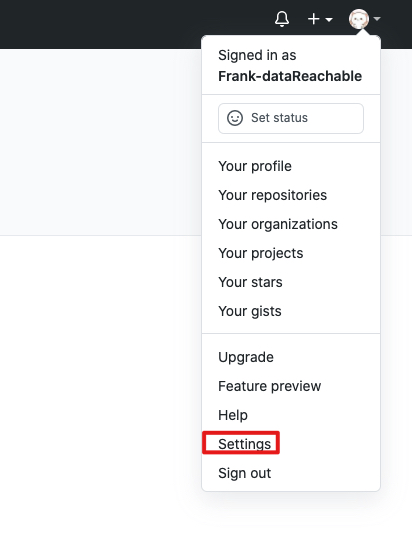
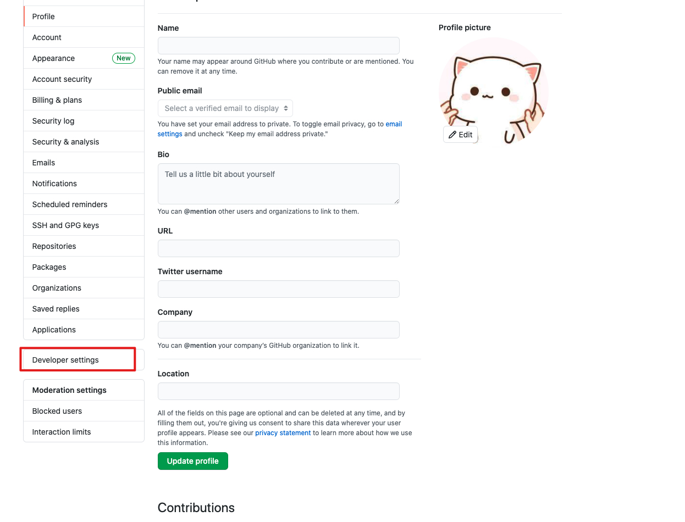
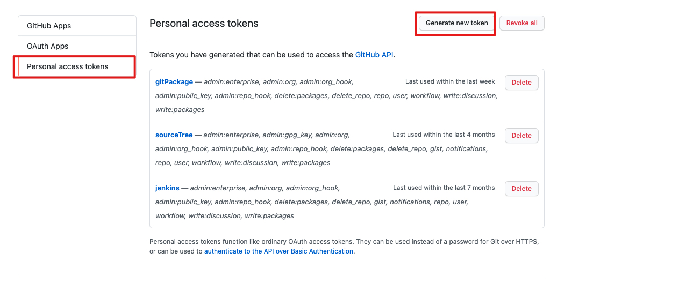
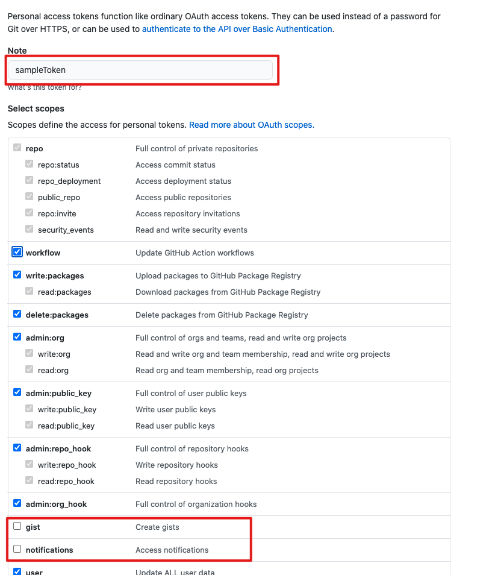
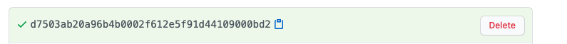
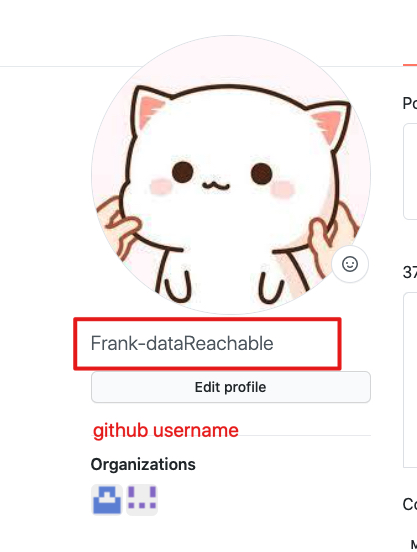

<!DOCTYPE html>
<html lang="en">
<head><link rel='icon' href='favicon.ico' type='image/x-icon'/>
    <meta charset="UTF-8">
    <meta name="viewport" content="width=device-width, initial-scale=1, maximum-scale=1, user-scalable=no">
	<script src="//cdnjs.cloudflare.com/ajax/libs/highlight.js/11.1.0/highlight.min.js"></script>
    <link rel='icon' href='favicon.ico' type='image/x-icon'/>
    <style>
        @media print {
        *,
        *:before,
        *:after {
            background: transparent !important;
            color: #000 !important;
            box-shadow: none !important;
            text-shadow: none !important;
        }

        a,
        a:visited {
            text-decoration: underline;
        }

        a[href]:after {
            content: " (" attr(href) ")";
        }

        abbr[title]:after {
            content: " (" attr(title) ")";
        }

        a[href^="#"]:after,
        a[href^="javascript:"]:after {
            content: "";
        }

        pre,
        blockquote {
            border: 1px solid #999;
            page-break-inside: avoid;
        }

        thead {
            display: table-header-group;
        }

        tr,
        img {
            page-break-inside: avoid;
        }

        img {
            max-width: 100% !important;
        }

        p,
        h2,
        h3 {
            orphans: 3;
            widows: 3;
        }

        h2,
        h3 {
            page-break-after: avoid;
        }
        }

        pre,
        code {
        font-family: Menlo, Monaco, "Courier New", monospace;
        }

        pre {
        padding: 0.5rem;
        line-height: 1.25;
        overflow-x: scroll;
        }

        a,
        a:visited {
        color: #3498db;
        }

        a:hover,
        a:focus,
        a:active {
        color: #2980b9;
        }

        .modest-no-decoration {
        text-decoration: none;
        }

        html {
        font-size: 12px;
        }

        @media screen and (min-width: 32rem) and (max-width: 48rem) {
        html {
            font-size: 15px; 
        }
        }

        @media screen and (min-width: 48rem) {
        html {
            font-size: 16px;
        }
        }

        body {
        line-height: 1.85;
        }

        p,
        .modest-p {
        font-size: 1rem;
        margin-bottom: 1.3rem;
        }

        h1,
        .modest-h1,
        h2,
        .modest-h2,
        h3,
        .modest-h3,
        h4,
        .modest-h4 {
        margin: 1.414rem 0 0.5rem;
        font-weight: inherit;
        line-height: 1.42;
        }

        h1,
        .modest-h1 {
        margin-top: 0;
        font-size: 3.998rem;
        }

        h2,
        .modest-h2 {
        font-size: 2.827rem;
        }

        h3,
        .modest-h3 {
        font-size: 1.999rem;
        }

        h4,
        .modest-h4 {
        font-size: 1.414rem;
        }

        h5,
        .modest-h5 {
        font-size: 1.121rem;
        }

        h6,
        .modest-h6 {
        font-size: 0.88rem;
        }

        small,
        .modest-small {
        font-size: 0.707em;
        }

        /* https://github.com/mrmrs/fluidity */

        img,
        canvas,
        iframe,
        video,
        svg,
        select,
        textarea {
        max-width: 100%;
        }

        @import url(http://fonts.googleapis.com/css?family=Open+Sans+Condensed:300,300italic,700);

        @import url(http://fonts.googleapis.com/css?family=Arimo:700,700italic);

        html {
        font-size: 18px;
        max-width: 100%;
        }

        body {
        color: #444;
        font-family: "Open Sans Condensed", sans-serif;
        font-weight: 300;
        margin: 0 auto;
        max-width: 48rem;
        line-height: 1.45;
        padding: 0.25rem;
        }

        h1,
        h2,
        h3,
        h4,
        h5,
        h6 {
        font-family: Arimo, Helvetica, sans-serif;
        }

        h1,
        h2,
        h3 {
        border-bottom: 2px solid #fafafa;
        margin-bottom: 1.15rem;
        padding-bottom: 0.5rem;
        text-align: center;
        }

        blockquote {
        border-left: 8px solid #fafafa;
        padding: 1rem;
        }

        pre,
        code {
        background-color: #fafafa;
        }
    </style>
</head>
<body>
	<div>
        <h2 id="front-end-project-specifications">Front End Project Specifications</h2>
<div align="center">
    
    <br/>
    <div style="margin:auto">
        <span style="font-size:200%">Front End Project</span>
    </div>
</div>

<h2 id="description">Description</h2>
<p>This is the Front End project specifications, it will include project structure introduction and how to setup and run the project.</p>
<h2 id="project-structure">Project Structure</h2>
<h3 id="overview">Overview</h3>
<pre><code>ProjectSample/ .................... Project Folder
├─ public/ ........................ Public Static Files Root Folder
│  ├─ favicon.ico ................. Project Favicon
│  ├─ icon.png .................... Project Icon
│  ├─ index.html .................. Project Production HTML File
│  └─ indexDev.html ............... Project Development HTML File
├─ src/ ........................... Project Root Folder
│  ├─ global.d.ts ................. Typescript Third-party Package Declaration File
│  ├─ index.tsx ................... Project Root File
│  ├─ Components/ ................. Project Public Components Root Folder
│  │  ├─ index.ts ................. Unified Export Project Public Components File
│  │  └─ PublicComponentA/ ........ Project Public Component A Folder
│  │     ├─ index.tsx ............. Project Public Component A Entry File
│  │     └─ style.scss ............ Project Public Component A Style File
│  ├─ PageLayouts/ ................ Project Page Layout Root Folder
│  │  ├─ index.ts ................. Unified Export Project Layouts File
│  │  └─ LayoutA/ ................. Project Layout A Folder
│  │     ├─ index.tsx ............. Project Public Layout A Entry File
│  │     └─ style.scss ............ Project Public Layout A Style File
│  ├─ Pages/ ...................... Project Pages Root Folder
│  │  ├─ index.ts ................. Unified Export Project Pages File
│  │  └─ PageA/ ................... Project Page A Folder
│  │     ├─ index.tsx ............. Project Page A Entry File
│  │     ├─ style.scss ............ Project Page A style
│  │     └─ Components/ ........... Project Page A Private Components Folder
│  │        ├─ index.ts ........... Unified Export Project A Private Components File
│  │        └─ PrivateComponentA/ . Project Page A Private Component A Folder
│  │           ├─ index.tsx ....... Project Page A Private Component A Entry File
│  │           └─ style.scss ...... Project Page A Private Component A Style File
│  ├─ Route/ ...................... Route Root Folder
│  │  └─ index.tsx ................ Route Management Entry File
│  └─ Store/ ...................... Store Root Folder
│     ├─ rootReducer.ts ........... Root Reducer To Combine All Module Reducer
│     ├─ rootSaga.ts .............. Root Saga
│     ├─ rootStore.ts ............. Root Store
│     └─ moduleA/ ................. ModuleA Folder
│        ├─ actionTypes.ts ........ ModuleA Action Types File
│        ├─ actions.ts ............ ModuleA Actions File
│        ├─ reducer.ts ............ ModuleA Reducer File
│        └─ sagas.ts .............. Modulea Asynchronous Request Function Management Saga File
├─ webpackConfig/ ................. Webpack Root Folder
│  ├─ webpack.common.js ........... Webpack General Configuration File
│  ├─ webpack.dev.js .............. Webpack Development Environment Packaging Configuration File
│  └─ webpack.prod.js ............. Webpack Production Environment Packaging Configuration File
├─ .babelrc ....................... Configure Presets And Plugins File
├─ .eslintignore .................. ESLint To Ignore Specific Files File
├─ .eslintrc.js ................... Typescript Syntax Detection Rules File
├─ .prettierrc.js ................. Code Formatting Style Rules File
├─ package.json ................... Project Configuration Information File
├─ postcss.config.js .............. Project Style Configuration File
└─ tsconfig.json .................. Typescript Compilation Rules File

</code></pre>
<h3 id="public-folder">Public Folder</h3>
<p>The public folder mainly contains some static files in the project, for example, the icon of the project, some local pictures and the root file of the project html in the project.</p>
<h3 id="src-folder">Src Folder</h3>
<p>The src folder mainly contains the entry file of the project, including all the style files, functional files, asynchronous request files and page routing management files in the project.</p>
<h2 id="usage">Usage</h2>
<h3 id="local-environment-requirement">Local Environment Requirement</h3>
<p>This project requires React with minimal version of 16.13.0 and thus, should install essential NPM packages prior to usage.</p>
<p>The following procedure assumes the node and npm have already been installed and are accessible from the commandline. For installation of node and npm, see <a href="https://www.npmjs.com/get-npm">install node and npm</a>.</p>
<h3 id="install-all-the-necessary-package-to-the-project">Install All The Necessary Package To The Project</h3>
<p>Run the following command to install the packages:</p>
<pre><code class="language-javascript">npm install
</code></pre>
<h3 id="setting-up-eslint-and-prettier-to-work-with-this-project">Setting Up ESLint and Prettier To Work With This Project</h3>
<p>For a good developer experience, it is useful to set the editor to automatically run ESLint&#39;s automatic repair commands when saving files.
To open your user and workspace settings, follow the following method:</p>
<p>On Windows/Linux - File &gt; Preferences &gt; Settings &gt; Extensions &gt; Scroll down and find &quot;Edit in settings.json&quot;</p>
<p>On macOS - Code &gt; Preferences &gt; Settings &gt; Extensions &gt; Scroll down and find &quot;Edit in settings.json&quot;</p>
<p>You can also open the Settings editor from the Command Palette (⇧⌘P) with Preferences: Open Settings or use the keyboard shortcut (⌘,), or see <a href="https://code.visualstudio.com/docs/getstarted/settings">User and Workspace Settings</a> to get more information.</p>
<p>Now, You should have an open file to execute it. If you don’t want to format the file manually every time, you can also format it when saving. Therefore, you need to open the settings/preferences of Visual Studio Code users in JSON format and configure the following:</p>
<pre><code class="language-javascript">{
  &quot;editor.codeActionsOnSave&quot;: {
    &quot;source.fixAll.eslint&quot;: true
  },
  &quot;editor.formatOnPaste&quot;: true,
  &quot;editor.formatOnSave&quot;: true,
  &quot;eslint.validate&quot;: [
    &quot;javascript&quot;,
    &quot;javascriptreact&quot;,
    &quot;typescript&quot;,
    &quot;typescriptreact&quot;,
    &quot;scss&quot;
  ],
}
</code></pre>
<h3 id="configure-github-personal-accesstoken-to-ensure-that-the-project-gets-the-companys-private-component-library">Configure Github personal accesstoken to ensure that the project gets the company&#39;s private component library</h3>
<ul>
<li><p>Create your own personal access token in github</p>
<ol>
<li>Click on the avatar chart in github and select the <code>settings</code> option \</li>
<li>Select the option <code>Developer settings</code> in the menu bar on the left \</li>
<li>Then select <code>Personal access tokens</code>, and then click the <code>Generate new token</code> button \</li>
<li>Enter the Token name, then select all the options except <code>gist</code> and <code>notifications</code> and click the <code>Generate token</code> button\</li>
<li>GitHub generated the token, please keep it properly, it will only appear once, if you want to use the personal accesst token again next time, you need to create a new token</li>
</ol>
</li>
<li><p>Log in to the account with personal access token</p>
<ol>
<li>Open the terminal</li>
<li>Enter <code>npm login --registry=https://npm.pkg.github.com</code> and press Enter</li>
<li>Enter your github username in username, username is not case sensitive\</li>
<li>The password is the personal access token just generated, just copy and paste</li>
<li>email is the email address when the account is registered</li>
<li>Successful login</li>
</ol>
</li>
<li><p>After the login is successful, get the relevant npm private package from the company’s private project, otherwise the package installation cannot be carried out</p>
</li>
</ul>
<h3 id="run-the-project-demo">Run The Project Demo</h3>
<p>Enter the following command to run the demo:</p>
<pre><code class="language-javascript">npm run start
</code></pre>

	</div>
</body>
</script>
</html>